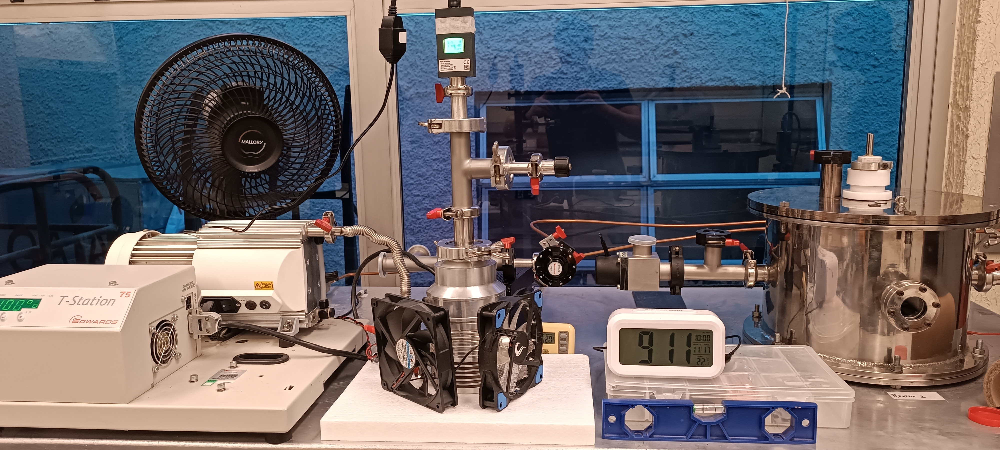
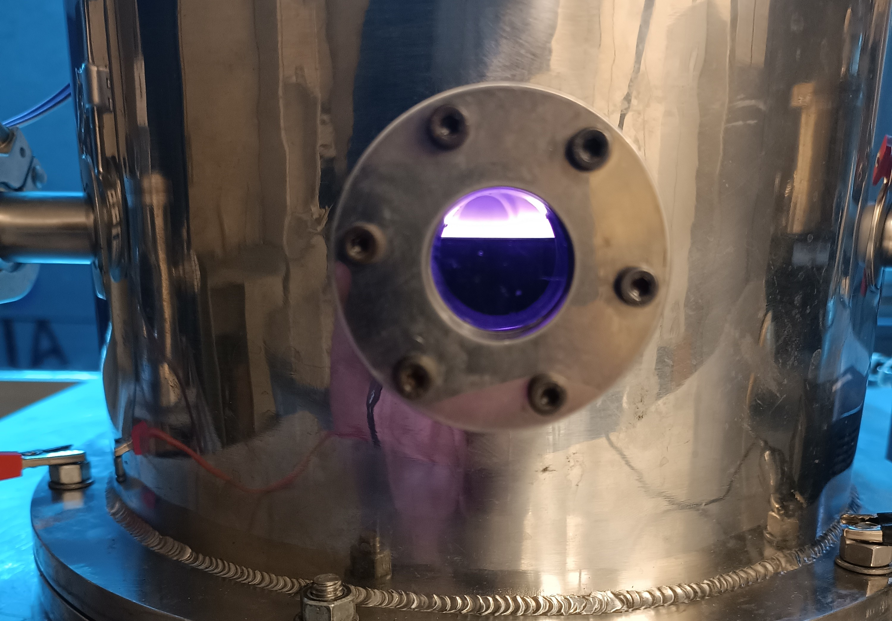
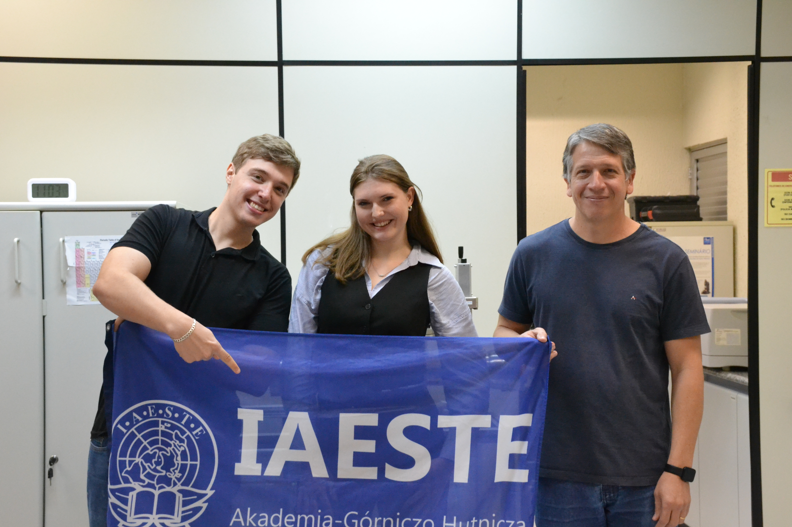

Produção científica organizada em um único portal
O repositório permite consultar publicações, congressos e registros acadêmicos do laboratório.
Portal institucional para organizar a produção científica, os equipamentos e os integrantes do LIFS em uma interface acessível, responsiva e fácil de consultar.



O repositório permite consultar publicações, congressos e registros acadêmicos do laboratório.
O catálogo apresenta informações básicas dos equipamentos e oferece fluxo de agendamento para membros.